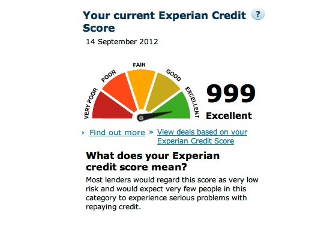

How Can I Check My Credit Scores? | Equifax®
Personal Products & Services
Equifax Premium Products
Get peace of mind when you choose from our comprehensive 3-bureau credit monitoring and identity theft protection plans.
Equifax Complete™ Family Plan Equifax Complete™ Premier Score Watch ® Compare Premium productsEquifax Complete™ Family Plan
Help look after your family with credit monitoring and ID theft protection features.
Uncover potential fraud with 3-bureau credit monitoring and alerts Feel more confident knowing that the dark web is being monitored for your Social Security Number Help better protect up to 4 children by locking their Equifax credit report Learn MoreEquifax Complete™ Premier
Take control with a one-stop credit monitoring and identity theft protection solution from Equifax.
Know where you stand with access to your 3-bureau credit scores and report Help monitor your credit and Social Security number Uncover potential fraud with credit monitoring and alerts Learn MoreScoreWatch ®
Know where you stand with Equifax credit report monitoring and access to your FICO® score.
Access your FICO® score and Equifax credit report twice a year Help better protect your identity with credit monitoring and alerts See how your FICO® score trends over time Learn MoreEquifax Value Products
Get the basics you need to stay on top of your credit; including 1-bureau credit score access, Equifax credit report lock, and alerts.
Equifax Complete™ Equifax Credit Monitor™ Equifax Core Credit™ Compare Value productsEquifax Complete™
Don’t let identity theft catch you off guard. Get better prepared to monitor your credit and help better protect your identity with Equifax Complete™.
Receive alerts of key changes to your Equifax credit report Should you become a victim of identity theft, our dedicated ID Restoration Specialists will work on your behalf to help you recover Learn MoreEquifax Credit Monitor™
Easily lock and monitor your Equifax credit report with alerts.
Know when key changes occur to your credit score and Equifax credit report with alerts Easily lock your Equifax credit report and be alerted if an attempt to access it is blocked Learn MoreEquifax Core Credit™
Get the basics with your monthly credit score and report.
Keep track of your financial progress with monthly VantageScore credit scores Feel credit confident with monthly access to your Equifax credit report Learn More Learn & SupportLearn more about...
Credit reports Understand how your financial behavior impacts you and your credit. Identity theft Learn what you can do to help better protect your information, and what you should be looking for when it comes to identity theft. Credit scores Understand credit scores, creditworthiness, and how credit scores are used in day-to-day life. COVID + Credit Find resources to help you navigate financially in a global pandemic. View all education articlesNeed help?
FAQ Security Freeze Credit report disputes Credit report s & credit scores Equifax products Military personnel & families Fraud alerts Customer Care Need help? We are available by phone or email.Tell us why you're here
Understand my Equifax credit report and score Help protect myself from identity theft Prepare to make a large purchase Get a free copy of my Equifax credit report Place or manage a freeze on my Equifax credit report Dispute information on my Equifax credit report Place or manage a fraud or active duty alert Credit Report AssistanceCredit Report Assistance
Get your free weekly credit report Access a free weekly credit report through www.annualcreditreport.com. Get my free Equifax credit report With a myEquifax account, you'll receive multiple Equifax credit reports each year. No credit card required! Place a security freeze Place or manage a freeze to restrict access to your Equifax credit report, with certain exceptions. Dispute information on your Equifax credit report Submit a dispute if you notice something is inaccurate or incomplete on your credit report. Request a fraud or active duty alert Place an alert on your credit reports to warn lenders that you may be a victim of fraud or on active military duty. Sign up for active duty credit monitoring Get free credit monitoring if you are an active duty military or National Guard member. Other ways to get additional free credit reports You may be entitled to additional free credit reports in certain circumstances, such as after placing a fraud alert, becoming unemployed or receiving public assistance, or being denied credit or insurance in the past 60 days. Visit consumer services center Create your myEquifax TM account Quickly access your Equifax credit report, place a freeze or fraud alert, or submit a dispute. SIGN UP LOG IN
Business Products & Solutions Industries & Business Needs Industries Automotive Business Services Communications, Utilities & Digital Media Education Financial Services Healthcare Insurance Mortgage Restaurants Retail & Wholesale Trade Staffing Transportation & Distribution Business Needs Acquire More Customers Credit Data Reports Credit Monitoring & Identity Protection Grow Existing Business Leverage Analytics Manage Regulatory Compliance Manage My Workforce Mitigate Risk Prevent Fraud Recover Debt Run My Small Business Verify Information Learn Thought Leadership Evolving Customer Expectations Credit Decisioning Discover Your Maximum Viable Person Recession Planning & Preparedness Understanding Current Expected Credit Loss (CECL) Resources Downloadable Assets Insights Blog Login
Contact Us
Government Products & Solutions Government Areas & Needs Government Area Healthcare Social Services Tax and Revenue Government Need Leverage Analytics Manage Regulatory Compliance Prevent Fraud Verify Information Resources Login
Contact Us
About Us Careers Company Profile Corporate Leadership Community Engagement Security and Technology Transformation Environmental, Social and Governance Priorities Corporate Governance Investor Relations Newsroom Support Argentina Australia Canada Chile Costa Rica Ecuador El Salvador Honduras India Mexico New Zealand Paraguay Peru Portugal Russia Spain United Kingdom United States Uruguay
Knowledge Center
How Can I Check Credit Scores?
Reading time: 2 minutes
Highlights:
Credit reports from the three nationwide credit bureaus do not usually contain credit scores
You may be able to get a credit score from your credit card company, financial institution or loan statement
You can also use a credit score service or free credit scoring site
Many people think if you check your credit reports from the three nationwide credit bureaus, you’ll see credit scores as well. But that’s not the case: credit reports from the three nationwide credit bureaus do not usually contain credit scores. Before we talk about where you can get credit scores, there are a few things to know about credit scores, themselves.
One of the first things to know is that you don’t have only one credit score. Credit scores are designed to represent your credit risk, or the likelihood you will pay your bills on time. Credit scores are calculated based on a method using the content of your credit reports.
Score providers, such as the three nationwide credit bureaus -- Equifax, Experian and TransUnion -- and companies like FICO use different types of credit scoring models and may use different information to calculate credit scores. Credit scores provided by the three nationwide credit bureaus will also vary because some lenders may report information to all three, two or one, or none at all. And lenders and creditors may use additional information, other than credit scores, to decide whether to grant you credit.
So how can you get credit scores? Here are a few ways:
Check your credit card, financial institution or loan statement. Many credit card companies, banks and loan companies have started providing credit scores for their customers. It may be on your statement, or you can access it online by logging into your account. Purchase credit scores directly from one of the three major credit bureaus or other provider, such as FICO . Use a credit score service or free credit scoring site. Some sites provide a free credit score to users. Others may provide credit scores to credit monitoring customers paying a monthly subscription fee.In addition to checking your credit scores, it’s a good idea to regularly check your credit reports to ensure that the information is accurate and complete.
You’re entitled to a free copy of your credit reports every 12 months from each of the three nationwide credit bureaus by visiting www.annualcreditreport.com . You can also create a myEquifax account to get six free Equifax credit reports each year. In addition, you can click “Get my free credit score” on your myEquifax dashboard to enroll in Equifax Core Credit ™ for a free monthly Equifax credit report and a free monthly VantageScore® 3.0 credit score, based on Equifax data. A VantageScore is one of many types of credit scores.
If you find information you believe is inaccurate or incomplete on your credit reports, contact the lender or creditor. You can also file a dispute with the credit bureau that provided the report. At Equifax, you can create a myEquifax account to file a dispute. Visit our dispute page to learn other ways you can submit a dispute.
Related Content What is a Credit Score? In Credit Scores Articles How Are Credit Scores Calculated? In Credit Scores Articles What is a Good Credit Score? In Credit Scores Articles Why Do Credit Scores Fluctuate? In Credit Scores Articles View More RETURN TO ARTICLESGet your free credit score today!
We get it, credit scores are important. A monthly free credit score & Equifax credit report are available with Equifax Core Credit TM . No credit card required.
Learn More
Who We Are
About Equifax Careers Newsroom Investor RelationsCredit Report Assistance
Get my free annual credit report Dispute info on credit report Request a fraud alert Place a security freeze on reportsCredit Education
Credit Score Credit Report Identity Theft ProtectionConnect with us
Contact a Customer Care Representative Privacy Policy Terms of Use Ad Choices Report a Vulnerability Accessibility Sitemap Connect with Us Copyright 2020 Equifax, Inc. All rights reserved Equifax and the Equifax marks used herein are trademarks of Equifax Inc. Other product and company names mentioned herein are the property of their respective owners. x